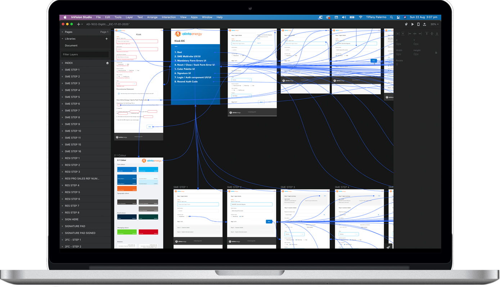

The Kiosk EIC
Alinta Energy
Summary
Design a digital sales tool to replace the manual sign up process being used by Kiosk Sales Agents and Door to Door Sales Agents

Stage 1. Understand.
Understanding my users and the Alinta brand.
1. Users: what problems are they facing?
2. Brand: what is the Alinta brand, mission and goals? How do the two align?
Product vision: For Alinta and Partner Sales Agents, the Kiosk Sales Tool provides a reliable, user-friendly method to complete a customer sale and manage sales commissions. Unlike Prospecting, and the manual sign up function the Kiosk sales tool will be secure, efficient and accurate resulting more clean legitimate and validated sales, and enable greater and more accurate customer data collection, reducing future billing issues and improving customer experience.
Stage 2. Research.
As a designer i have a tonne of assumptions around what the user wants, needs or does'nt want in a journey / design
I have to challenge my assumptions, so i worked with my product owners and the end users to flesh out my assumptions
One on one interviews were conducted with the stakeholders (stakeholders are users too). I wanted to know what they liked about the current Prospecting and manual kiosk sign up process. I conducted interviews with door to door sales representatives, Kiosk sales teams, inbound & outbound Alinta sales agents.
I interviewed 3 to 5 users from each of these groups.
Stage 3. Personas.
So it's after i have completed all my research i take all my data & create personas / proto personas.
I printed my personas out and hung them around the office. My personas are used to layout the data i've gathered from user testing they are a visual layout
I use personas as a guide when i make design decisions they help me when i get stuck on an interaction or function. They help me figure out my users needs, wants and desires.
When i need a wider view of the journey my users will take i create journey maps. That way i can map out the journeys stages, the steps, the users emotions during their interaction and opportunities - are there any? When i'm able to create a journey map I can better understand what the users are going through when they interact with my product and service.
My journey maps allow me to flesh out pain points and ways to restructure them. Life support proved to be an interaction i had to move around. It was subject to numerous compliance & regulatory changes with the help of my journey map i was able to swap it out. Mad Men Personas
Stage 4. Wireframing.
Moking up journeys. I like to jump right in there. When possible i will mock up a first draft in Balsamiq, export to PDF and share it around. I love Balsamiq because it is just that a great way to communicating to the wider business and stakeholders. Lo-fi wireframing has very little distraction overhead - feedback is quick, and opportunities present themselves clearly.
Lo-fi's are great for brain dumping. They're meant to be temporary; even hi-fi wireframes and prototypes are meant to be thrown out reworked, iterated on and tested against. Kiosk Retrieval portal, for admin use only.
I never land on the ideal product after one wireframe. No one does.
Kiosk went through numerous tweaks and iterations. The Kiosk project was a high priority deliverable. Any questions?
I built out the Kiosk hi-fi's using the Alinta DLS.
And paired it up with the Product advice tool. This tool enabled sales agents to search up distro tariffs and present the customer with the best and most discoount available to them in their area. the website only displays 2 discounted products sales agents require more than two products - product advice returns dozens of plans. Product advice tool
Stage 5. Development & Launch.
After designing, designing & re-designing some more i began collaborating with the Front-end and Back-end teams
Along with the BA's & Scrum Master I ran kick off sessions, i walked the back-end and front-end developers through my business approved hi-fi user journey.
T-shirt sizing sessions were held a day or two after my kick-offs. Stories were sized, big stories were split into smaller stories when required. when the effort of a Jira story evolved into a larger task / story.
During the Development phase i mase sure i did regular desk checks, check-ins & feedback sessions, when and where possible. dependant on resource availability.
UX is really everyone's job and in my opinion UX works well with good, safe & honest meaningful collaboration.
Kiosk EIC Design Hand-off PrototypeStage 6. Analysis.
At the end of our sprints I held Showcase sessions open to anyone. It was a great forum for the Developers to show the wider business and the digital team their achievements throughout the project.
Myself and the Scrum master, tech leads, PO and BA's would conduct Analysis sessions to disscuss in an open and safe forum things like
Where my process went well?
What were the blockers?
What went well?
What can we do better in the next sprint?
How are the end users responding?
Did we solve their issues, did we eliminate or add pain points?
It has been my experience over the course of my career in UX that every UX design process is going to be unique to the business and product.
I'm Comfortable with uncertainty. I don’t have all the answers.